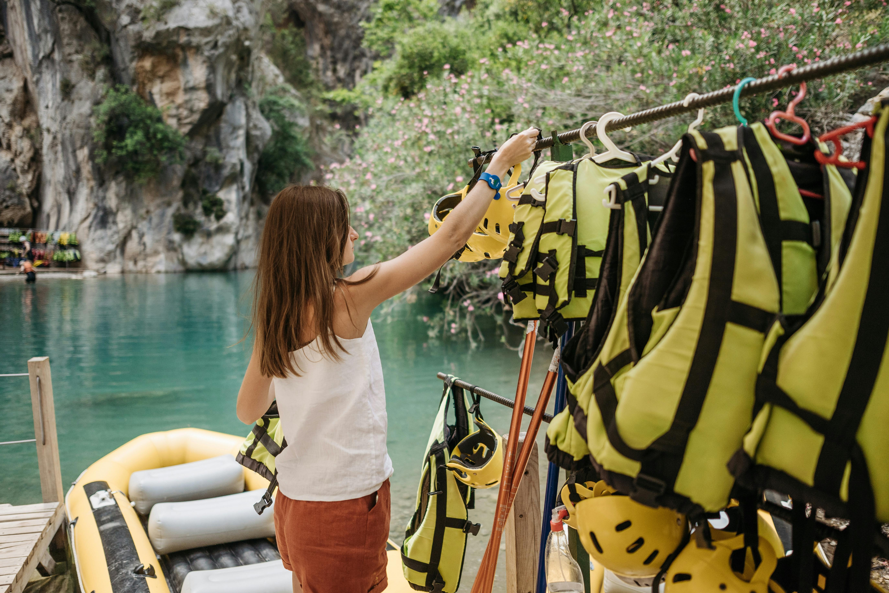
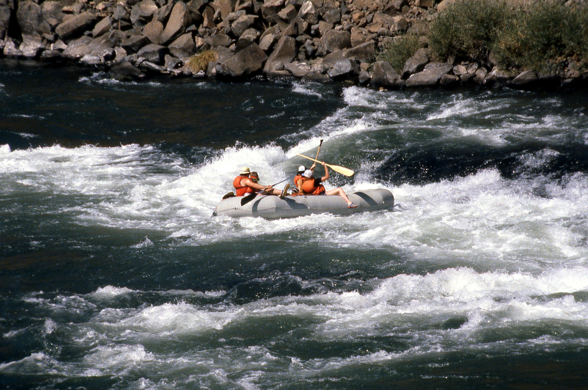

Information
White Water Rafting
Whitewater rafting is an exciting way to explore nature while enjoying the thrill of the river. Our guided trips are designed for all experience levels, from beginners looking for a relaxing float to experienced rafters seeking challenging rapids. Safety is always our priority, and our experienced guides make sure every trip is both exciting and secure.

What To Bring
- Water shoes or sandals
- Sunscreen
- Change of clothes
- Towel

Safety Tips
- Always wear your life jacket
- Listen carefully to your guide
- Stay seated in the raft
- Hold onto safety ropes if needed
Trip Levels
Beginner – Calm waters perfect for families and first-time rafters.
Intermediate – Moderate rapids for those wanting a little more adventure.
Advanced – Fast rapids and thrilling drops for experienced rafters.